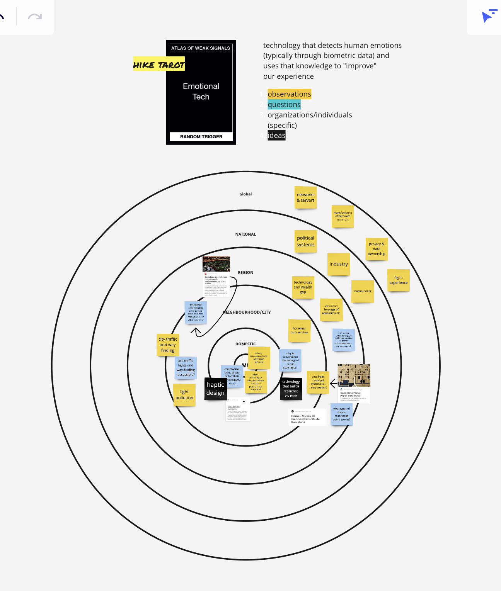
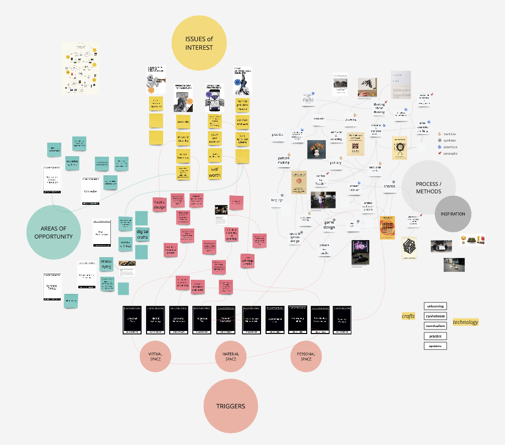
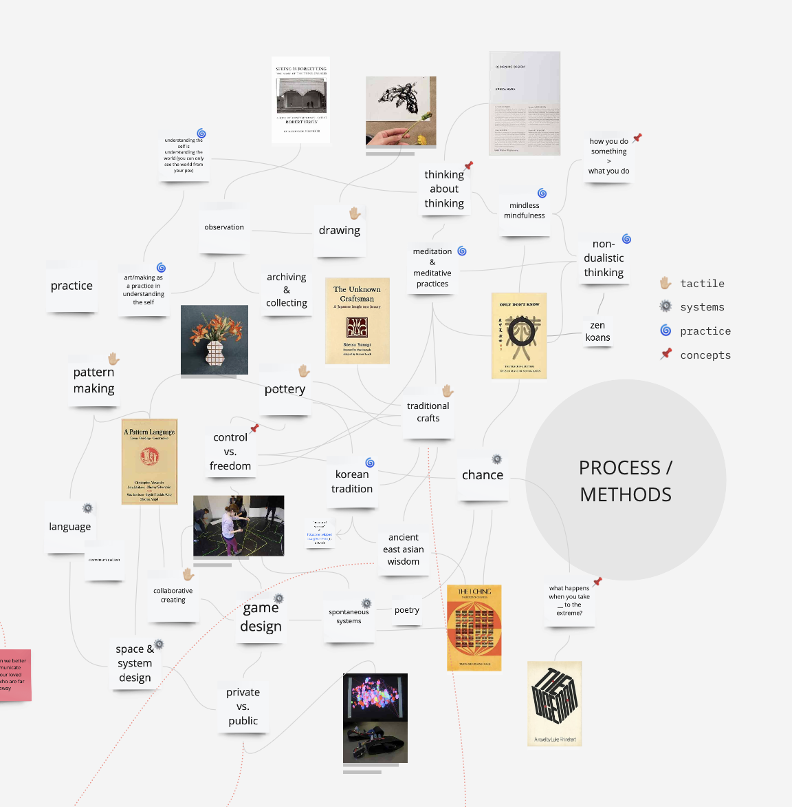
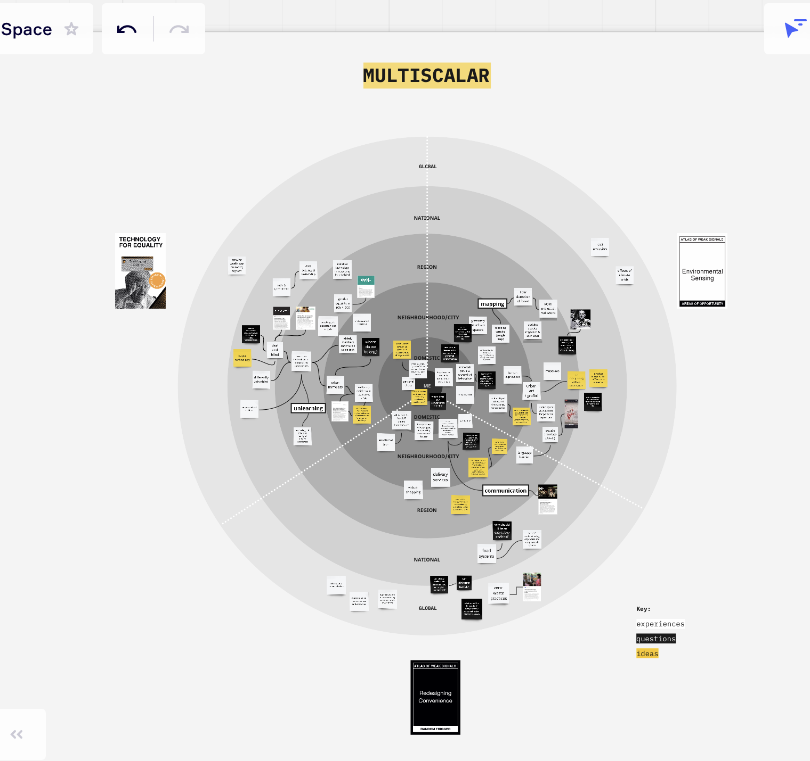

Atlas of Weak Signals
“Today we are going to talk about the future”. Who are we? Which future? What are we talking about? Listening to Mariana’s presentation, I resonated with her interest in finding human metaphors behind all aspects of technology. And how they persist through the history of humans creating technology (ie. ancient memory board vs. circuit board).Design Space
We were introduced to our design spaces on Miro, a working space we will be using throughout the program to map out our ideas, findings, experiments, and feedback. We started getting acquainted with this space through a card game of connecting our interests with random triggers to find meaningful insights. I enjoyed the format of the game and thought the pre-written cards were helpful in giving form to and begin thinking about abstract ideas. Here's the start of my design space:

Weak Signals in the Wild
We explored a specific weak signal in the wild, on a hike in Collserola Natural Park. My weak signal was “Emotional Tech”, as I was interested in the way technology affects our emotions and vice versa. Through some research, I learned "Emotional Tech" refers to technology that recognizes and uses human emotions (usually through biometric data) to improve their outputs and services.
- Can we use the input as emotions from other species besides humans?
- How can emo tech improve our relationship with our surroundings?
- How does tech affect the ways we relate to each other in a city?
- What do we mean when we say “better” experience or world. Do we define “better” as easier or more convenient? If everything is more convenient, are we missing out on the revelations and discoveries that inconvenience and random curve balls life throws us?
- Relationship of the city to the forest. Living in a capitalistic society, we have the tendency to want to build, expand, and grow our cities. But how does this affect the ecosystem and other species that have previously lived in the urban areas or currently live around it?
- The significance of seeing something vs “nothing”; for example a forest vs a field. I had never thought about the importance of visual scale in determining our values in this way. The park ranger brought up the topic of humans building on empty fields because they see the empty land as an opportunity to “build on”. In contrast, a forest full of trees and larger species is seen as something to be saved or preserved. But what we don’t realize is that ecosystems and other organisms like birds depend on fields to feed and survive.
- How can we discourage people from moving to cities? This was an interesting topic to have post covid, when our view of workspace and home space have shifted tremendously. In the past year, many people have already migrated to the countryside seeking nature, more space, and since remote work became a long-term possibility.

Updates on Design Space
I revisited my design space on Miro and created a more thorough space with my specific interests and included a section on my process and experience.

